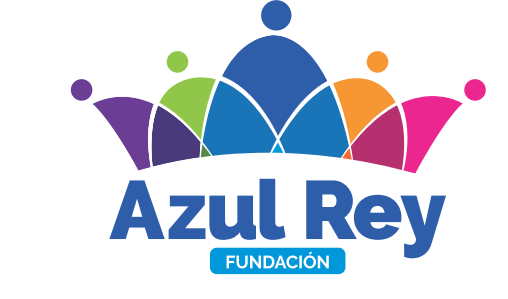

NUESTRO
PENSAMIENTO
NUESTRO
PENSAMIENTO
Trabajamos por mejorar la calidad de vida de nuestros pacientes, así como de su entorno familiar y social; por medio de programas integrales en salud y bienestar, que potencien las habilidades humanas y productivas de grupos poblacionales en condición de vulnerabilidad.
En el año 2025, seremos la institución con servicio ambulatorio para el manejo de adicciones tóxicas, más reputada en la ciudad de Sincelejo; y trabajaremos por extender nuestro nombre y acciones sociales al Caribe Colombiano. Nos han de conocer porque generamos cambios positivos en las poblaciones vulnerables que acuden a nuestros servicios, en temas de prevención, promoción y acompañamiento al ser humano.

|
Creemos en que el ser humano goza de libertad y autonomía para ser feliz en el mundo. Mas por circunstancias de la vida –algunas elegidas a voluntad, otras veces inducidas por los entornos-, los hombres y mujeres optan por caminos que dañan sus relaciones sociales y en consecuencia, afectan su salud física y mental. FUNDACIÓN AZUL REY, le apuesta a la restauración de la dignidad humana de manera integral:
|
|
Creer en la Santísima Trinidad: sin llegar a ser un impuesto y respetando la libertad de cultos, FUNDACIÓN AZUL REY reconoce que existe un ser divino, creador del universo expresado a través de la Santísima Trinidad (Padre: Hijo: Espíritu Santo). Esta concepción de aceptar que el humano es “creación divina”, nos ayuda a tener propósitos para el futuro, a pensar en la trascendencia de nuestras acciones y a comprometernos con la conservación de la especie humana y la armonía en la tierra. Cero tolerancia a la discriminación: todo el cuerpo laboral de FUNDACIÓN AZUL REY desaprueba cualquier acción que tenga discriminación explícita o implícita. Nuestra organización, trabaja con protocolos de inclusión social para que ningún grupo poblacional quede por fuera de los servicios ofertados cuando sean requeridos: afros, indígenas, gitanos o población ROM, población LGTBI, personas en condición de discapacidades físicas o cognitivas, adultos mayores, madres cabeza de hogar, población en condición de desplazamiento forzoso, víctimas del conflicto armado, entre otros. Amor: entiéndase, que luchamos porque sea el amor el motor de nuestra organización: trabajamos para que todas nuestras relaciones sociales lleven un mensaje de paz, armonía, respeto, convivencia y solidaridad con los más necesitados. Nuestro compromiso radica en que el personal interno de FUNDACIÓN AZUL REY pueda impactar su entorno, actuando de manera servicial y coherente con la idea universal del amor (ágape); de este modo, si todos nuestros colaboradores se trazan metas con base en el amor, los resultados llevarán consigo una semilla de caridad que se esparcirá al resto de la sociedad. Dignidad: reconocemos a todo ser humano (hombre y mujer) independientemente de su edad, procedencia, raza, condición social, económica y política, como sujeto de derechos amparados por la legislación de la República de Colombia, y respaldada por tratados internaciones en pro de los Derechos Internacionales Humanitarios. Todos nuestros esfuerzos se encaminan hacia la restitución de la voluntad propia del paciente; y así, éste pueda orientar sus acciones en pro de un futuro mejor.
|
